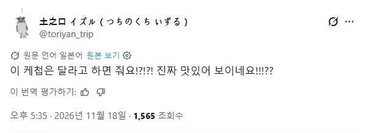
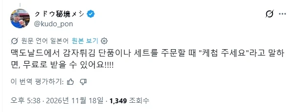
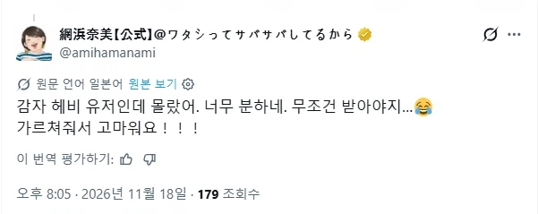
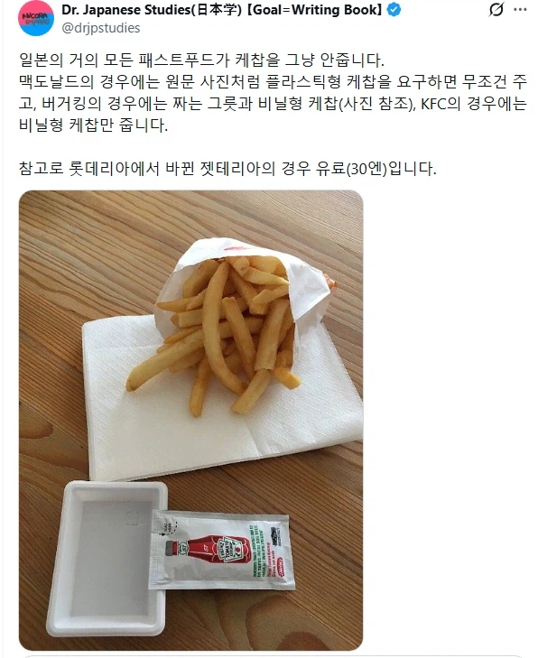

일본에서는 케찹은 공짜인데 말해야만 준다고
메뉴판에도 없어서 사람들이 당연히 안주는 줄 알고
주는줄 모르니까 당연히 케찹 없이 소금간으로 먹음




일본에서는 케찹은 공짜인데 말해야만 준다고
메뉴판에도 없어서 사람들이 당연히 안주는 줄 알고
주는줄 모르니까 당연히 케찹 없이 소금간으로 먹음
난 유니버셜 앞이 맥도날드에서 사먹었는데 거긴 그냥 주더라 외국인이 많이 와서 그런가
난 있어도 안찍어먹긴 함
이미 짠대 그걸 짠 소스에 또 찍어먹는게 좀 그럼
단짠으로 먹는거신데
단짠으로 먹어야 많이 먹혀서 그런걸껄 ㅋ
밑에 깔려있는 종이랑 컵에 적혀있는게 다 일본어인데 한국인거맞음?
헉 시발 제목 그대로 렉카질 해온건데 생각해보니 그렇네
맛집개붕이 일본에서 케첩 못먹은게 달라고 안해서 그런가 보네
www
캐치어보간 캐춉
도대체 여태까지 뭔 맛으로 먹은거여
소금맛 ㅋㅋㅋㅋ
안 찍어먹고 소금맛으로도 맛있긴함
예전엔 소금 더 뿌려주쇼 하면 해줬는데
개짭잘하니 난리도아님
고소한 기름맛 짠맛
일본 빡세네 케찹없으면 은근 느끼하지 않나
난 뭐 그냥 먹어도 맛있던데.. 세트로 나오는 거 소짜로 먹으면 딱 물리기 직전에 다 먹으니까
버거가게 생기면서 처음부터 케첩을 안 준건가?
아예 모르고 있다니
헐.. 불쌍;;
아니 소금간만된거를 먹고 있었다고????? 케찹없이? ㅋㅋㅋㅋ
일본에서 맥날 갔을때 걍 줬던거같은데
사실 점바점이기도 한데 맥날 감자는 소금간만해도 맛있긴함.
대신 일본이 감튀 양 자체는 2배가까이 주더라
진짜 일본인이 말해준 후기: 맥도날드 자리마다 충전포트 있는거에 존나 놀람 일본은 없거나 존나 느린 a타입 usb만 꽂을 수 있는 경우가 대다수래
냉장고 한구석에 모아진 케첩들을 보며 .. 어떻게 처리하지 맨날 고민하는데
한통에 담아
모아놨다 쏘야하거나 냉동핫도그에 사놨다가 하나씩 뿌려먹음됨
일본은 케찹 말해야 받을 수 있고
유럽은 케찹 돈주고 사야할걸
난 그냥 케첩이 맛이 없어서 안찍어먹음
일본 사는데 원래 케첩 안 먹어서 몰랐네
감튀 캐쳡 찍어먹어도 맛있긴 한데 따로 챙겨 먹을 정돈 아니라서 소금맛으로 먹음
그래서인지 일본 맥날감튀는 기본적으로 소금간이 좀 더 센느낌이긴하던데. 우리나라는 맥날은 그래도 소금간 꽤 되어있는데 다른 패스트푸드 감튀는 케찹 찍어먹는걸 전제로 하는지 그냥먹기엔 좀 싱거운 느낌
오뚜기랑 하인즈 케첩 맛 차이도 한 몫 하긴할거임
갠적으로는 프렌치프라이에는 오뚜기가 맛있긴함..
저거 진짠게 나도 일본 맥날갔을 때 케찹안줘서 누락됐나 했는데, 다른 테이블보니까 다 없어서
아 일본은 원래 안주는 구나 깨달음. 그래도 카운터가서 달라고 하니까 주더라
맥날에서 칠리소스 시켜서 그거 찍어먹으면 케찹보다 맛있음
난 케이준 소스ㅋㅋㅋ
유럽은 케챱이 유료다…
일본 맥날 감튀 그냥 먹어도 존나 짜서 캐첩 필요 없음
맘터도 현지화 했는지 캐첩 안 주더라
유럽도 세트사도 케챱안줘서 따졌더니 돈주고 사야된다해서 충격이였음 ㅋㅋㅋㅋㅋㅋㅋㅋ
집앞맥도날드는 소금간 하나도 안되어있어서 요새 감튀는 이러케나오나보다 했는데
다른지점에서 시켜보니까 빠삭빠삭짭잘짭짤 존맛이엇음 집앞맥날 망해라
난 케찹 안줘도 좋으니 소금으로 팍팍 쳐줬으면 좋겠음
맥날에서 예전에 주던 하인스 케찹이 지금 케찹으로 바뀌면서 맛이 없어짐
어쩐지 애니메이션에서도 암것도 안찍고 집어먹더라。。
아 그래서 그렇구나
일본에서 먹는데 캐첩 안주길래 캐찹 없다 하니까 주던데
감튀 마요네즈랑 먹으면 ㅈㄴ맛있더라
무조건 케찹달라고 해야 줌 ㅋㅋ